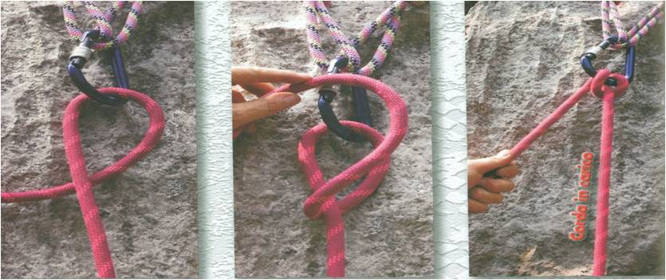
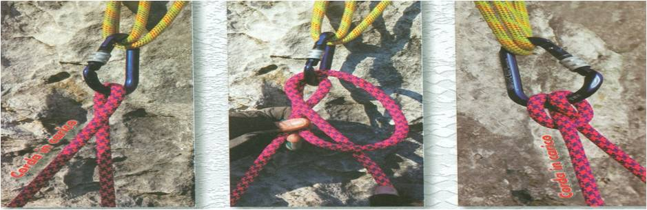
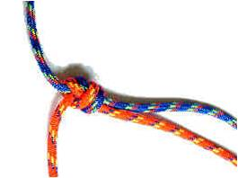

ASOCIATIA NATIONALA A SALVATORILOR MONTANI DIN ROMANIA
PROCEDURI ȘI TEHNICI DE BAZĂ ÎN SALVAREA MONTANĂ
Noduri pentru legare în coardă, asigurări şi autoasigurări
Noduri – asigurări - autoasigurări
Corzi, cordeline, bucle, centuri şi carabiniere: iată principalele accesorii pe care niciodată nu le folosim independent, ci în combinaţii mai mult sau mai puţin complicate. Pentru ca acestea să se combine între ele, sunt necesare nodurile. Cunoaşterea unui număr minim de noduri, potrivite scopului urmărit, este de o importanţă vitală în salvarea montană.
Orice nod trebuie să îndeplinească următoarele condiţii:
•Să fie elastic,
•Să nu se deformeze la tracţiune,
•Să nu se desfacă sub sarcină,
•Să nu alunece, provocând strangularea. Excepţie de la acest caz fac nodurile de asigurare şi de urcare pe coardă, care sub sarcină se blochează, iar descărcate, culisează pe coardă.
Nodurile trebuiesc însuşite foarte bine, acest lucru fiind posibil doar prin exersare. Se consideră că un nod este însuşit foarte bine atunci când acesta poate fi realizat în orice poziţie, în orice condiţii (chiar şi pe întuneric) şi chiar cu o singură mână.
Unele noduri pot fi folosite în mai multe scopuri, cum este cazul nodului în opt, supranumit pe drept „regele nodurilor”.
În funcţie de domeniul de aplicare, nodurile se clasifică în:
Noduri folosite în operaţiunile de salvare
-
Noduri de asigurare şi autoasigurare
-
Noduri de legare in coarda
-
Noduri de asigurare şi autoasigurare
-
Noduri de legare (înnădire) a două corz
-
Noduri de amarare / ancorare
-
Noduri de urcare pe coardă
Noduri de legare în ham
Normele UIAA interzic legarea direct în coardă, deoarece bucla ar exercita pe suprafaţa corpului presiuni de 20 kg./cm2, pentru o forţă de şoc de 1200 kg., ceea ce ar duce la grave leziuni şi chiar la moarte. Legarea în ham se va face numai prin „nodul opt prin urmărire” (faze 1-8)


Noduri de asigurare şi autoasigurare
a) Nodul „opt dublu” este un nod sigur (de autoasigurare) dar are dezavantajul că nu poate fi făcut decât cu ambele mâini iar recuperarea lui este mai anevoioasă.


Nodul „Semicabestan” este un nod de asigurare, uşor de realizat şi de recuperat. Se poate executa cu o singură mână.


Indiferent de nodul folosit pentru autoasigurare, punctele în care se face autoasigurarea trebuie să fie bine fixate (se recomandă să se folosească minim 2 puncte).
Noduri de legare a două corzi
„Nodul dublu pescăresc” – se foloseşte la legarea a două corzi cap la cap.


c) „Nodul pătrat” – este folosit la înnodări de corzi şi chingi. Nu este recomandat pentru sarcini mai mari de 40 KgF




Optul prin urmarire


Nodul de blocare sub tensiune


Fazele asigurari nodului de blocare sub tensiune


Noduri de amarare / ancorare
Nodul de scaun
Nodul de scaun este folosit în general în cazul în care avem nevoie de două bucle la capătul unei corzi sau cordeline, acestea fiind reglabile.


Machard
Prusic
Belluneze


Obendorf

Dublarea semicabestanului pentru lansarea a 2 persoane(marirea frecari)